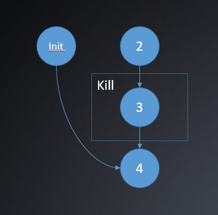

前言
此部分为设计背景，可不看
从16年8月至今我一直都在开发 XiaoMi 内部通用 BI 系统的 ETL 模块，第一个版本在10月初上线，目前还在不断的迭代开发中。整个 ETL 模块大致分成三个部分：
- 前端部分：记录 ETL 的配置信息，包括数据源，脚本，执行时参数等
- 多进程调度部分：包括触发器和调度器，触发器筛选可被执行的作业并封装成任务，调度器读取任务执行
- ETL 执行模块：拿到任务之后根据相应参数实例化对应的数据抓取模块 E 和存储模块 L，并处理两个模块之间的数据格式转化 T
ETL 任务分成两种：实时任务和历史任务。设计方案需要满足的要求是：
- 实时任务秒级触发
- 历史任务实时性要求不高，但同一时间执行的历史任务数目有上限
- 实时任务和历史任务出现异常时不应该影响触发器和调度器的运行
因此，我研究和设计了几种 PHP 多进程模型来满足要求，设计方案为：
- 实时任务由触发器直接分裂进程执行，且分裂后触发器应该继续触发其他任务，不应等待进程回收
- 历史任务由触发器封装成任务，塞入 Redis 队列，调度器读取 Redis 队列分裂进程执行，当分裂进程达到限制数目后，等待直到有进程被回收。
设计目的
两种 PHP 多进程模型：
- 父进程不等待子进程退出
- 父进程记录子进程个数并及时回收，超过最大限制个数时等待
一些概念
在多进程模型中，如果子进程没有及时被父进程显式地回收，会产生僵尸进程问题，导致大量进程ID 和内存被占用。这里介绍一些基本概念：
僵尸进程
如果子进程退出后一直不被父进程显式地获取退出状态，那么就会一直占用进程号，资源也不会被释放
孤儿进程
父进程退出后，子进程还在运行，此时子进程就会被 init 进程（进程号为1）收养，并由 init 进程完成回收工作
一些函数
int pcntl_fork ( void )
在当前进程当前位置产生分支（子进程），并返回 int 值，父子进程都从 fork 位置继续执行，父进程返回值为子进程ID号，子进程返回值为0，返回值小于0时异常。
int pcntl_wait ( int &$status [, int $options = 0 ] )
wait 函数挂起当前进程的执行直到一个子进程退出或接收到一个信号要求中断当前进程或调用一个信号处理函数。 如果一个子进程在调用此函数时已经退出（俗称僵尸进程），此函数立刻返回。子进程使用的所有系统资源将 被释放。wait3 级别下提供 options 选项：
- WNOHANG -> 如果没有子进程退出立刻返回。
- WUNTRACED -> 子进程已经退出并且其状态未报告时返回。
模型1
父进程不等待子进程退出
方案
采用两层 fork 模型，首先父进程分裂出一代子进程后，一代子进程再次分裂出二代子进程，一代子进程直接退出，使二代子进程成为孤儿进程，从而被 init 进程收养。此时父进程继续执行其他逻辑不需要关心回收问题，二代子进程结束后会由 init 进程回收。
结构图

代码
1 |
|
模型2
父进程记录子进程个数并及时回收，超过最大限制个数时等待
方案
每轮循环先回收已经报告退出状态的子进程（非挂起模式，即如果没有子进程可回收则继续执行），然后判断子进程数目是否超过限制，如果超过则等待1s后继续循环，否则分裂子进程执行统计。
代码
1 |
|
一些关于进程信号通讯的补充
bool pcntl_signal ( int $signo , callable|int $handler [, bool $restart_syscalls = true ] )
为信号 signo 安装一个信号处理器。指明接收到某个特定信号时，执行某个方法。
bool pcntl_signal_dispatch ( void )
检查发送给自己的信号并调用先前 pcntl_signal 安装的信号处理器。
bool posix_kill ( int $pid , int $sig )
向某个进程发送某个特定信号。
在进程模型中的使用
待补充
备注
数据库和 Redis 连接在多进程下会产生串流的情况，所以在代码中，父进程分裂前会先关闭所有连接，子进程产生后，父子进程各自再打开新的连接。
后记
暂时没想到